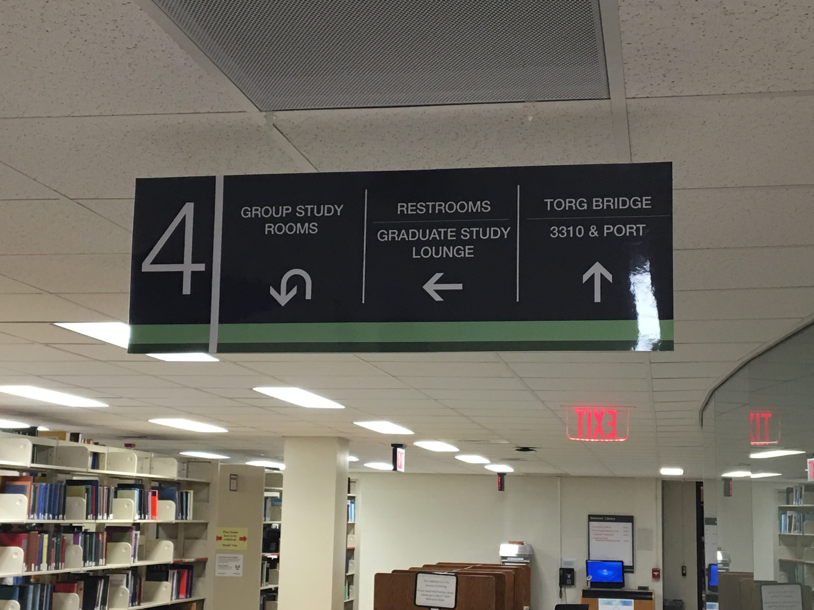

Follow the Signs
Go to Newman Library and travel to the fourth floor. Notice the number 4 on the left hand side of the sign in this image. This lets you know you are on the fourth floor. All the way to the right of this sign is the title, "Torg Bridge 3310 & Port" with an arrow guiding you. Just follow the signs with Port.

Leave the Library
Port is located on the bridge just outside the library.
Sign by Door to Guide You
If you have any questins about heading in the right place, just look at the sign next to the door you are leaving. On the second line is Port: Digital Research Lab. You are headed in the correct direction.

The View right Outside of Port
If you are standing outside of the Port door, this is the view you will see while leaving Newman library. As you can see, right outside of port is the Torgersen bridge.
This is Not Locked to You
To the left of the Port room door is a lock. Just swipe your Hokie ID Card, wait for the green light and open the door.
An Overview
The door in the image on the left is where you will enter. Welcome to Port.
The Three Zones
In this image, the back-left is the Explore Zone. To the right of the Explore Zone is the Show and Tell Zone. The computer to in the front-right is the Crunch Zone. There are more computers in Port than the three seen here and more computers will be arriving to Port in the near future.
Let's Collaborate
The circular desk with four chairs is a great location for groups to collaborate on projects within Port. This table is also where Port's consultants meet to assist users of Port.
The Linux Machine
This machine is a powerful tool that is similar to a Unix, which is to say, the Linux computer is compatable with multiple operating systems.

Smart Touch Board
The computer you see here in the background is Port's interactive computer. Four users can work on the computer simultaneously by simply using their hand or Smart Pen to interact with the screen.


{kind=link}
{kind=link}
{kind=link}
{kind=link}
{kind=link}
{kind=link}
{kind=link}